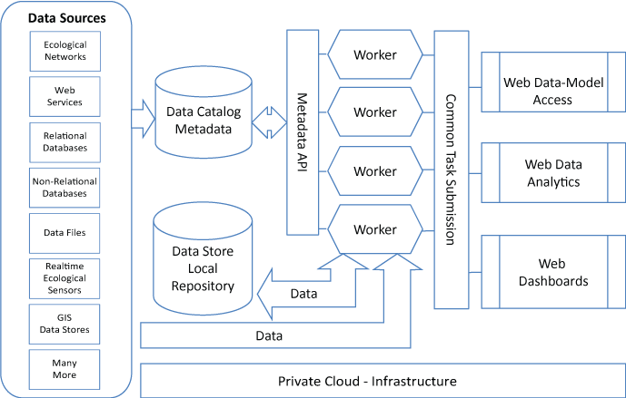

University of Oklahoma
This project is maintained by ouinformatics
The University of Oklahoma IT Informatics team has a broad suite of cyberinfrastructure services built as a general service orientated architecture. The components of this architecture enable researchers to quickly wrap existing code bases and datasets into modern service-orientated and web enabled applications. Additionally new code bases can be developed which conform to modern data processing and anlaytic approaches. Much of this work has been funded by an Oklahoma CyberCommons EPSCoR Track-II RII grant which has supported IT informatics professionals to develop and sustain these systems for the future benefit of the research community at OU.
